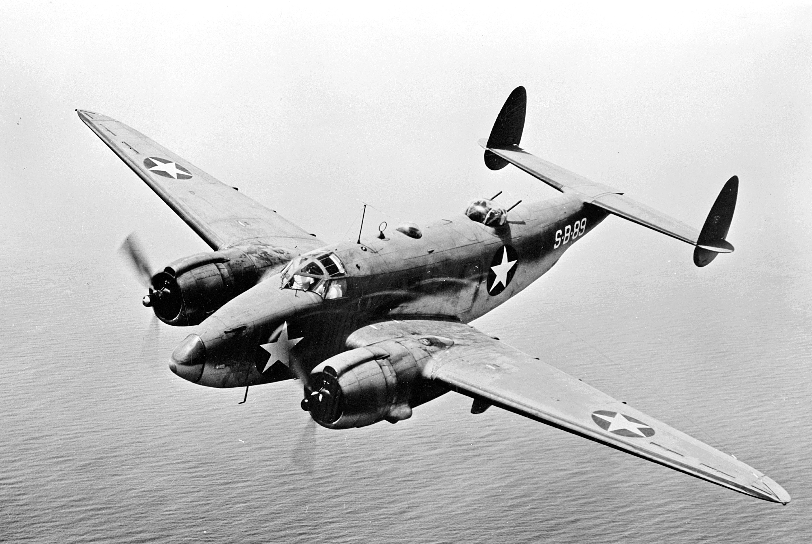
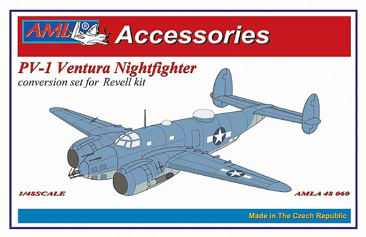
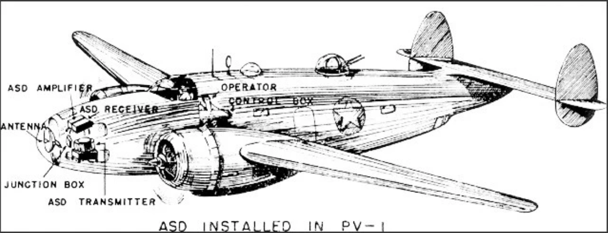
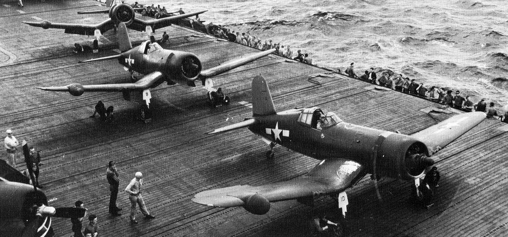
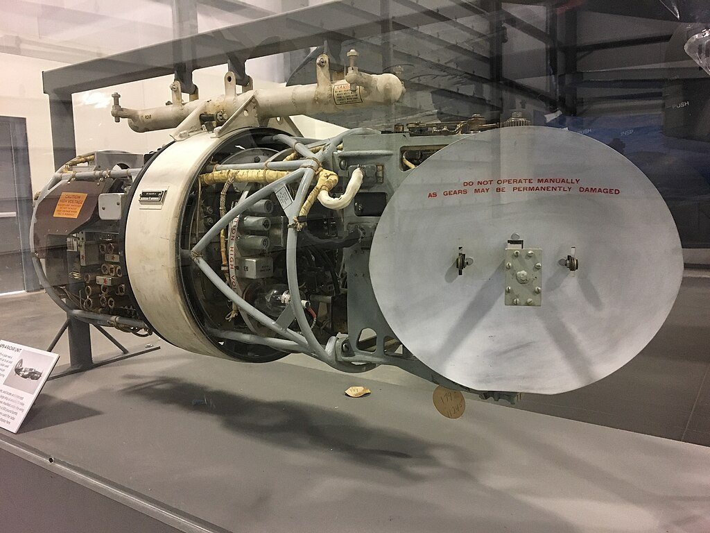
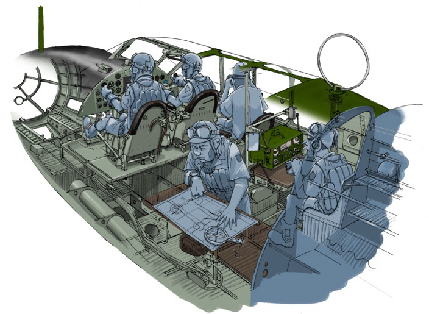

WW2의 야간 전투기 이야기 (2) - 기관총 대신 레이더
게시: 2025-10-16T06:30:57+09:00
<태평양 상공 최초의 야간 전투기> 흔히 공대공 레이더를 갖춘 야간 전투기는 유럽 전선에서만 치열하게 활약한 것으로 알려져 있지만, 태평양에서도 나름 꽤 활약. 그 첫 스타트를 끊은 것은 미해병대. 1942년 11월에 영국제 AI (Airbourne Interceptor) Mk IV 공대공 레이더를 장착한 PV-1 Lockheed Ventura 쌍발 전투기로 첫 야간 전투기 중대를 만든 것. 다만 아직 cavity magnetron을 사용하지 않아 200MHz 전파를 사용하던 공대공 레이더인 AI Mk IV로 어둠 속에서 적기를 격추하는 것이 쉬운 것은 아니라서, 이들의 실제 일본기 격추 사례는 없음.

(PV-1 Lockheed Ventura는 Lockheed B-34 Lexington으로도 알려져 있는데, 똑같은 항공기를 해군에서는 PV-1, 육군에서는 B-34로 불렀기 때문. 다만 육군에서는 이걸 유럽에서 주간 폭격에 사용해보니 적 요격기에 대항하기엔 너무 취약해서 별로 사용되지 않음. 그에 비해 해군에서는 이걸 주력 폭격기보다는 장거리 정찰 폭격기로 사용하기 위해 연료 탱크 용량을 늘리고, 공대함 레이더 ASB를 장착. 그 레이더 덕분에 PV-1은 B-24 Liberator 장거리 폭격기들의 선두에 서서 길잡이 노릇을 하는 경우가 많았다고.)

(PV-1 Lockheed Ventura의 야간 전투기 버전. 코 끝에 AI Mk IV 레이더 특유의 화살촉 같은 안테나가 보임.)

(PV-1 내부에 설치된 레이더 그림.) 실제 야간에 최초의 적기 격추를 해낸 것은 해병대가 아니라 해군 소속 F4U-2 Corsair 야간 전투기들. 별도의 레이더 조작병이 탑승하지 않고 조종사 혼자서 조종도 하고 레이더도 운용해야 했던 1인승 콜세어 전투기가 이걸 해낼 수 있었던 것은 크게 2가지 이유. 하나는 지난 편에서 설명한 대로 야간 전투기를 유도해준 전투기 관제사들 덕분. 그리고 또 하나의 이유는 캐버티 마그네트론을 이용한 본격적인 공대공 레이더 AN/APS-4 레이더를 장착했기 때문. 해병대 관제사들의 효율적인 유도와 우수한 레이더 덕분에 1943년 10월 31일, H. D. O’Neil 대위는 G4M Betty 폭격기를 야간에 격추하여 태평양 최초의 야간 전투기 kill을 기록.

(AN/APS-4 레이더를 오른쪽 날개 끝의 물방울 모양의 radome 속에 장착한 F4U-2 Corsair 야간 전투기. 1944년 USS Intrepid (CV-11) 갑판에서의 모습. 저 레이더의 무게는 82kg에 달했으므로, 저걸 장착하느라 F4U-2는 원래 양날개에 3정씩 장착하던 M2 Browing 12.7mm 기관총을 저 오른쪽 날개에는 2정만 장착. M2 기관총 본체의 무게는 대략 40kg 정도인데, 그에 딸린 탄약도 제거했으니 3정을 장착한 왼쪽 날개와 무게 균형이 대충 맞았던 모양.)

(레이돔을 걷어낸 AN/APS-4 레이더 본체의 모습. 14인치 접시형 안테나가 달려있는데, 저 안테나는 좌우로 75도, 위아래로는 30도씩 움직일 수 있음. 공대함은 물론 공대공으로도 사용될 수 있는데 약 3.3 GHz의 S-band 주파수를 사용히여 선박의 경우는 24km에서, 항공기의 경우는 8km에서 탐지 가능. 전파 빔(beam)의 폭은 가로로는 약 10º, 세로로는 약 15º로서 매우 좁았으므로 레이더의 해상도는 높았으나 대신 드넓은 밤하늘에서 저것 하나 들고 적기를 찾는 것은 사실상 불가능. 그래서 넓은 빔 폭을 가지는 지상 탐색 레이더의 유도를 받는 것이 반드시 필요했음.)
<일본해군의 대응과 미해군의 역대응> 이를 시작으로 미해군과 해병대의 야간 전투기들은 1943년 첫해에만 총 39대의 일본 폭격기를 야간에 격추. 일이 이렇게 되자 일본해군은 난리가 남. 애초에 일본해군 항공대는 미해군의 레이더의 도입과 더불어 F6F Hellcat 전투기가 나오면서 주간 폭격은 도저히 불가능하다고 보고 야간 폭격에만 의존했는데, 이젠 그마저도 어려워졌기 때문. 일본해군은 대책을 강구. 그 대책이라고 나온 것이... 나름 머리를 잘 썼음. 지난 편에서도 설명했듯이, 야간 전투기 조종사는 공대공 레이더가 있다고 하더라도 거의 장님으로 나는 것이나 다름 없기 때문에 지상 관제사의 유도를 받는 것이 매우 중요했고, 그래서 주간 전투기에 비해 지상 관제사와의 대화가 매우 많았음. 그리고 그런 무전 통신은 암호화할 수도 없으니 공중의 일본 폭격기에서도 (고주파 무전기만 있고 또 영어만 된다면) 얼마든지 도청해서 들을 수 있었음.

(G4M 'Betty' 폭격기의 조종석 부분 내부 모습. Betty는 최대 폭장량이 1톤 정도에 불과한 저성능 쌍발 폭격기에 불과했으나, 의외로 승무원 수는 많아서 7명이나 되었음. 참고로 F4U Corsair 전투기에 폭탄을 장착할 경우 1.8톤까지 가능. 아무튼 그러니까 Betty 한 대가 격추될 때마다 7명이 물고기밥이 되는 것. 저기 보이는 5명 외에 측면 기총수 겸 기관사, 그리고 후방 기총수가 있음. 저기 보이는 5명의 역할 중에서 조종사, 부조종사, 항법사 겸 폭격수 겸 전방 기총수, 무선통신사 겸 측면 기총수 등은 알겠는데, 그냥 쌍안경으로 밖을 내다보는 사람도 하나 보임. 저 사람의 역할은 뭘까? 찾아보니 상부 기총수 겸 기내지휘관으로서 고참 부사관이 주로 맡았다고 함. 가장 시야가 좋은 상부 기총좌에서 전체 상황을 관찰하며 기내의 다른 기총수들을 지휘하는 역할이었다고. 그나저나 무전수 머리 위에 적군의 전파 발신원을 찾기 위한 둥근 루프 안테나가 보임.)
그런데 그렇게 도청해서 뭘 어쩌자는 것이지? 일본 폭격기들은 혹시 근처에서 그런 야간 전투기와 관제사 사이의 활발한 교신이 들려오면, 그냥 임무를 포기하고 기지로 되돌아갔음. 어차피 야간 폭격은 정확도도 매우 떨어지는데, 굳이 그거 하겠다고 귀한 기체를 위험에 빠뜨릴 필요가 없다고 생각한 것. 대신 야간 전투기들이 기지로 귀환하는 것이 무선 통신에서 들리면, 그때 일본 폭격기들이 발진했음. 미해군도 바보는 아니었음. 일본해군이 자신들의 야간 전투기 관제용 무전을 도청하고 있다는 것을 미해군도 눈치 챘고, 이후 그렇게 레이더에 일본군 야간 폭격기가 포착되면 하늘에 아군 야간 전투기가 떠있지 않은데도 마치 떠있는 것처럼 자기들끼리 떠들었음. 그래서 일본군 폭격기가 겁을 먹고 되돌아간 경우가 최소한 1번 이상은 분명히 있었다고 함.